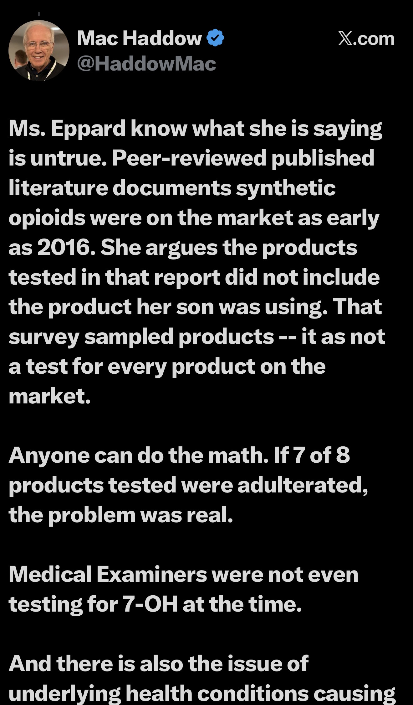
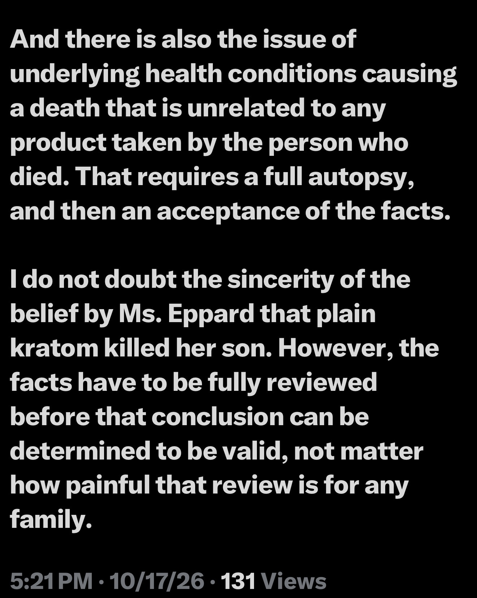

OPEN TRUTH / The documents are not hiding
A 2016 warning. Years of testimony.
Now a lecture to a grieving mother.
Mac Haddow says the evidence was there in 2016. He is now using it to tell a mother who lost her son that she knows her account is untrue. Interesting. We checked seven of his written submissions to lawmakers from 2020 through 2023. They warn repeatedly about adulteration. None cites the 2016 commercial 7-OH study.
01 / October 17, 2026 · His own words
Apparently, a grieving mother needs a fact-check.
Responding to Ms. Eppard on X, Haddow wrote:
That is not simply disagreement over a toxicology report. It accuses a mother of knowingly making a false statement.
Further down the same post, Haddow said he did not doubt the sincerity of her belief that plain kratom killed her son. Those sentences address different claims, but the juxtaposition is extraordinary: first he imputes dishonesty to a bereaved mother, then he professes respect for her sincerity. The screenshots preserve his exact wording.
She “know[s]” what she is saying is untrue.
“I do not doubt the sincerity of the belief by Ms. Eppard...”
Before making a grieving mother the target of a public fact-check, a useful place to look is the record Haddow left with the people writing the laws.


02 / The study he now cites
2016. In print. Right there in the title.
On October 17, 2016, Lydecker and colleagues published Suspected Adulteration of Commercial Kratom Products with 7-Hydroxymitragynine. It reported unusually elevated 7-OH in commercially available kratom products.
Haddow now points to the study as evidence the problem existed long before 2024. The problem for him is not the publication date. It is the missing citation in the written testimony he submitted while discussing adulterated products.
Read the complete 2016 paper · PubMed record
The study suspected enhancement in these sampled products. It did not establish that all kratom products in 2016 contained added 7-OH, prove that the substances were synthesized, identify what Ms. Eppard's son consumed, or establish a continuous supply of the same products through 2024. Seven out of eight is a finding about a sample, not a national prevalence estimate.
03 / Seven submissions · 2020–2023
Funny how the 2016 finding missed every one of these hearings.
Haddow was not shy about naming adulterants. Here is what appeared in the written material examined:
Maryland
HB 283: A detailed history of adulteration
He discussed Sweden's O-desmethyltramadol-contaminated Krypton product. He did not cite Lydecker's 2016 elevated-7-OH study. Evidently, there was room for one contamination history, but not the other.
Read testimony · MarylandKansas
HB 2025: He even mentioned synthesized alkaloids
He warned about vendors synthesizing plant alkaloid content, then named heroin, fentanyl and morphine. Not the specific elevated-7-OH findings from 2016.
Read testimony · KansasOhio + Kansas
HB 236 and HB 2056: Same three adulterants. Different state.
Heroin. Fentanyl. Morphine. Each submission argued that pure kratom was safe and that adulterated products caused major harms. The 2016 study still did not make the presentation.
Ohio PDF · Kansas PDFThree states
Kansas, Pennsylvania and Ohio: 7-OH comes up. The product study doesn't.
The Pennsylvania and Ohio filings acknowledge 7-OH's abuse potential in animal experiments. That is not the same as warning legislators that a published 2016 marketplace study had identified unusually elevated 7-OH in sold products.
Kansas PDF · Pennsylvania PDF · Ohio Senate PDFThe 2016 study is now important enough to invoke against a grieving mother. In seven written legislative submissions reviewed here, Haddow repeatedly discussed adulteration without once identifying that study or its unusually elevated 7-OH findings.
Plenty of room for fentanyl, heroin and morphine. Not a line for the study he now treats as essential context.
This is a review of seven selected written legislative submissions supplied for this investigation, not an exhaustive record of all his testimony or every private or oral statement from 2016 onward. Some documents mention 7-OH and its abuse potential, but none identifies the Lydecker 2016 marketplace finding.
04 / FOIA-released email · June 11, 2024
Then came the word “recent.” Eight years after publication.
In June 2024, Oliver Grundmann emailed Haddow and others a statement signed by four researchers on 7-OH and mitragynine pseudoindoxyl. The email described the “recent appearance” of pure or semi-synthetically produced products in the U.S. marketplace.
Two signatories, Christopher McCurdy and Abhisheak Sharma, had also coauthored the 2016 paper. They did not wait eight years to report the earlier findings. They published them in 2016.
Their 2016 paper
Commercial products with unusually elevated 7-OH; authors suspected product adulteration.
Their 2024 statement
Purified or semi-synthetic 7-OH and pseudoindoxyl products recently entering the U.S. market.
These can be different product categories. That distinction matters. The 2024 correspondence did not deny the 2016 findings; it described the newer appearance of purified or semi-synthetically produced substances. That careful distinction somehow disappears when the older study is used to discredit a bereaved mother.
Open the June 2024 email and attached researcher statement (PDF)
05 / June 10, 2024 · California
One day earlier, he called a proposed 7-OH limit unnecessary.
On June 10, 2024, Haddow signed a letter opposing portions of California's AB 2365. Under Amendment #4, he argued that a proposed limit of 1% 7-OH as a share of total kratom alkaloids was unnecessary, citing other restrictions on synthesized alkaloids.
His stated objection was legislative overlap, not a claim that high-7-OH products were harmless. That context matters. It also makes his position worth reading alongside the earlier commercial-product findings: while contesting a proposed numerical 7-OH limit, his signed letter did not cite the 2016 study he now invokes as proof the problem had been evident for years.
06 / Connor's End Gas Station Heroin Act · September 2026
Connor's name is on the bill. The 2016 paper was already on the shelf.
The American Kratom Association announced support for Connor's End Gas Station Heroin Act, named for Connor Neeleman. The Senate and House versions, S. 5383 and H.R. 10272, address certain synthetic or concentrated kratom-derived substances. The AKA now calls for urgent action against dangerous 7-OH products.
What do Connor's parents think of Haddow now relying on a study published in 2016 to argue that elevated-7-OH products were already on the market, when none of the seven written legislative testimonies reviewed here brought that specific finding to lawmakers' attention?
Their answer is theirs alone. This investigation does not pretend to know their views or establish when Haddow personally first read the paper. It establishes that the study was public, that he now cites it, and that his seven reviewed written legislative submissions did not cite it.
A decade-old study has become useful for challenging a grieving mother's account. Its conspicuous absence from the written legislative record examined here deserves equal attention. Quite a different standard of urgency.
07 / The paper trail / No invitation to respond
The documents have already said plenty.
In the posts, the 2016 study is treated as an indispensable fact. In seven written submissions to lawmakers between 2020 and 2023, it is nowhere cited. The same man repeatedly described adulteration, called out other drugs by name and defended access to kratom products.
The research existed. The hearings happened. The warning did not appear in these written submissions.
Now that paper gets dusted off to challenge a mother who has buried her son. Remarkable timing for a citation to find its voice.
This is not a conversation with Mac Haddow. It is a comparison of what he said in public, what he submitted to lawmakers, and what the cited study actually reported. The original documents are below, without an invitation to spin them.
The original evidence / No disappearing footnotes
Ten PDFs. Two X screenshots. All here.
These links are to files stored in /advocate/ under their existing names. The seven legislative submissions are separate from the two policy letters and the June 2024 correspondence.
What this article does and does not claim: The comparison reviews seven selected written testimony documents, not all public or private statements Haddow may have made. It does not prove he knew of the study in 2016, concealed findings intentionally or that the mother was wrong about her son's death. The 2016 results concern a limited sample and cannot by themselves establish the source or cause of an individual death. The 2024 email refers to pure or semi-synthetic products, a potentially distinct category. The comparison identifies a missing citation in these selected submissions, not a finding of dishonesty or deliberate concealment.